Assembly
1. Lubricate output shaft and planetary components with transmission fluid. Use petroleum jelly to lubricate and hold thrust washers and plates in position.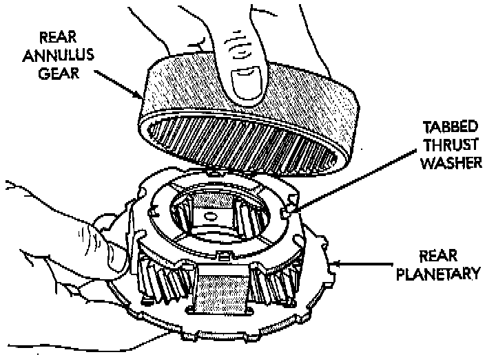
2. Assemble rear annulus gear and support if disassembled. Be sure support snap ring is seated and that shoulder-side of support faces rearward.
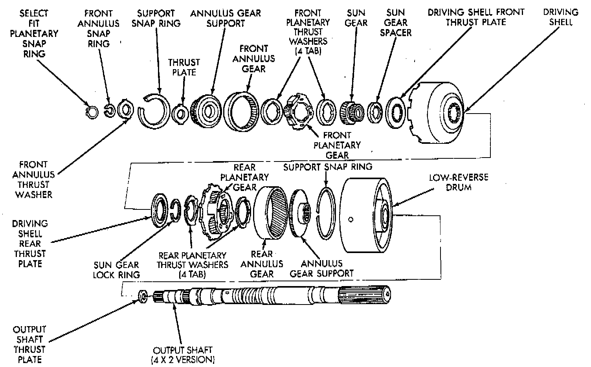
3. Install rear thrust washer on rear planetary gear. Use enough petroleum jelly to hold washer in place. Also be sure all four washer tabs are properly engaged in gear slots.
4. Install rear annulus over and onto rear planetary gear.
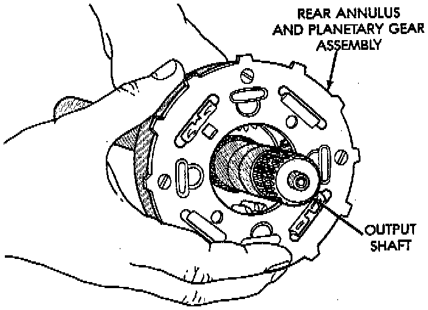
5. Install assembled rear planetary and annulus gear on output shaft. Verify that assembly is fully seated on shaft.
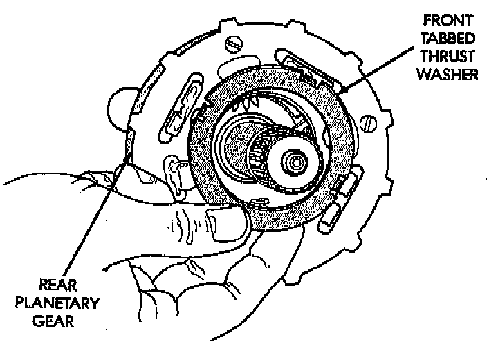
6. Install front thrust washer on rear planetary gear. Use enough petroleum jelly to hold washer on gear. Be sure all four washer tabs are seated in slots.
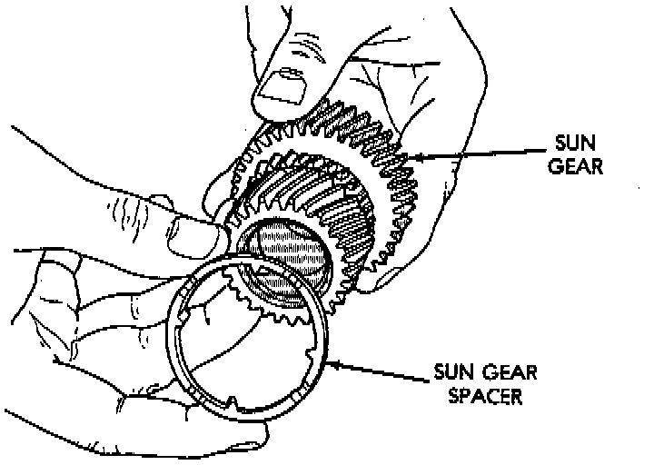
7. Install spacer on sun gear.
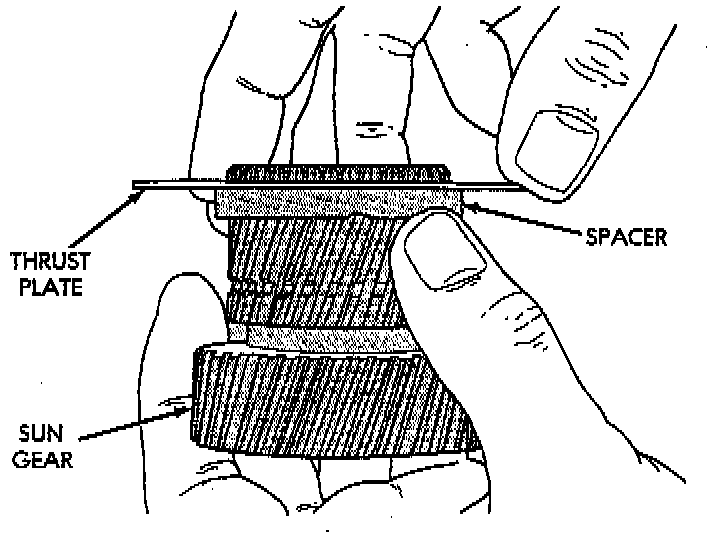
8. Install thrust plate on sun gear. Note that driving shell thrust plates are interchangeable. Use either plate on sun gear and at front/rear of shell.
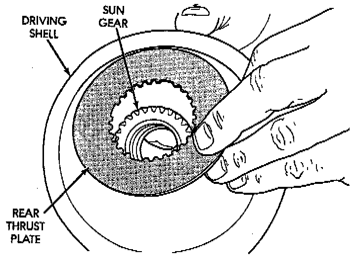
9. Hold sun gear in place and install thrust plate over sun gear at rear of driving shell.
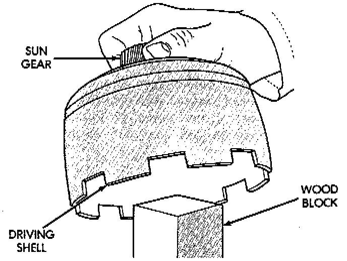
10. Position wood block on bench and support sun gear on block. This makes it easier to align and install sun gear lock ring. Keep wood block handy as it will also be used for gear-train end play check.
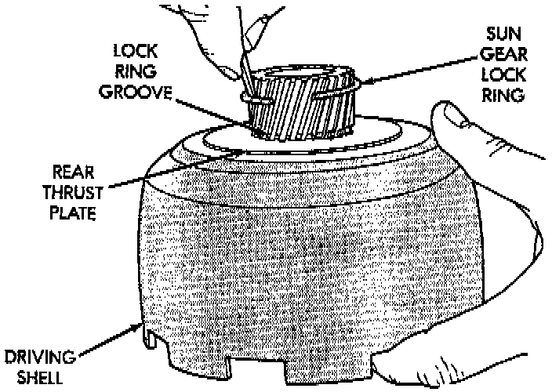
11. Align rear thrust plate on driving shell and install sun gear lock ring. Be sure ring irefully seated in sun gear ring groove.
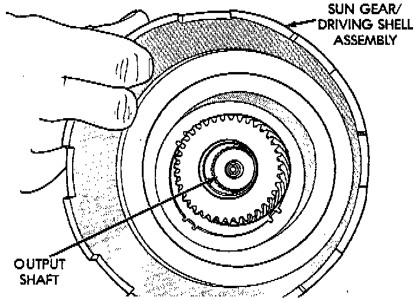
12. Install assembled driving shell and sun gear on output shaft.
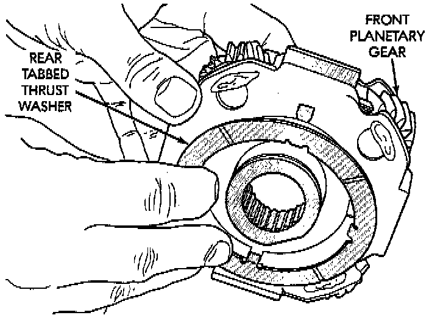
13. Install rear thrust washer on front planetary gear. Use enough petroleum jelly to hold washer in place and be sure all four washer tabs are seated.
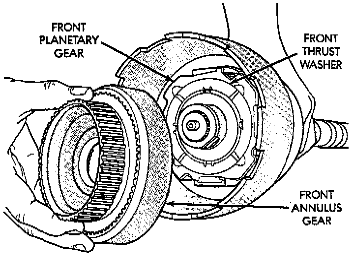
14. Install front planetary gear on output shaft and in driving shell.
15. Install front thrust washer on front planetary gear. Use enough petroleum jelly to hold washer in place and be sure all four washer tabs are seated.
16. Assemble front annulus gear and support, if necessary. Be sure support snap ring is seated.
17. Install front annulus on front planetary.
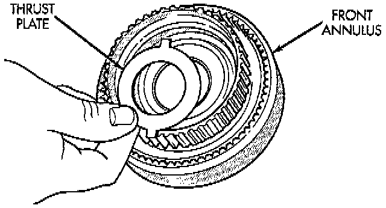
18. Position thrust plate on front annulus gear support. Note that plate has two tabs on it. These tabs fit in notches of annulus hub.
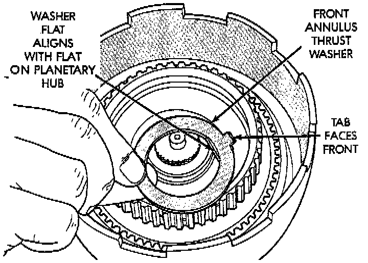
19. Install thrust washer in front annulus. Align flat on washer with flat on planetary hub. Also be sure washer tab is facing up.
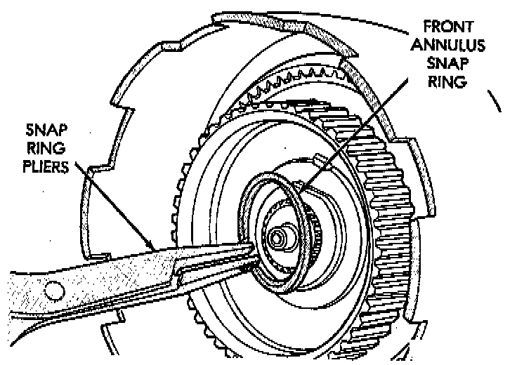
20. Install front annulus snap ring. Use snap ring pliers to avoid distorting ring during installation. Also be sure ring is fully seated.
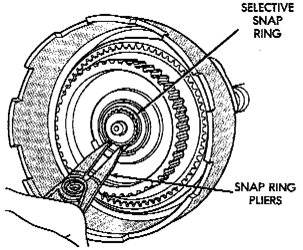
21. Install planetary selective snap ring with snap ring pliers. Be sure ring is fully seated.
22. Turn planetary gear-train assembly over so driving shell is facing workbench. Then support gear-train on wood block positioned under forward end of output shaft. This allows gear-train components to move forward for accurate end play check.
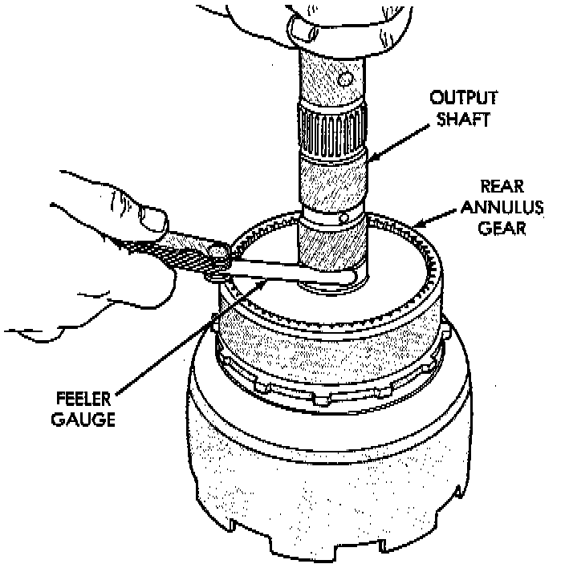
23. Check planetary gear-train end play with feeler gauge. Gauge goes between shoulder on output shaft and end of rear annulus support.
24. Gear-train end play should be 0.12 to 1.22 mm (0.005 to 0.048 inch). If end play is incorrect, snap ring (or thrust washers) may have to be replaced. Snap ring is available in three different thicknesses for adjustment purposes.